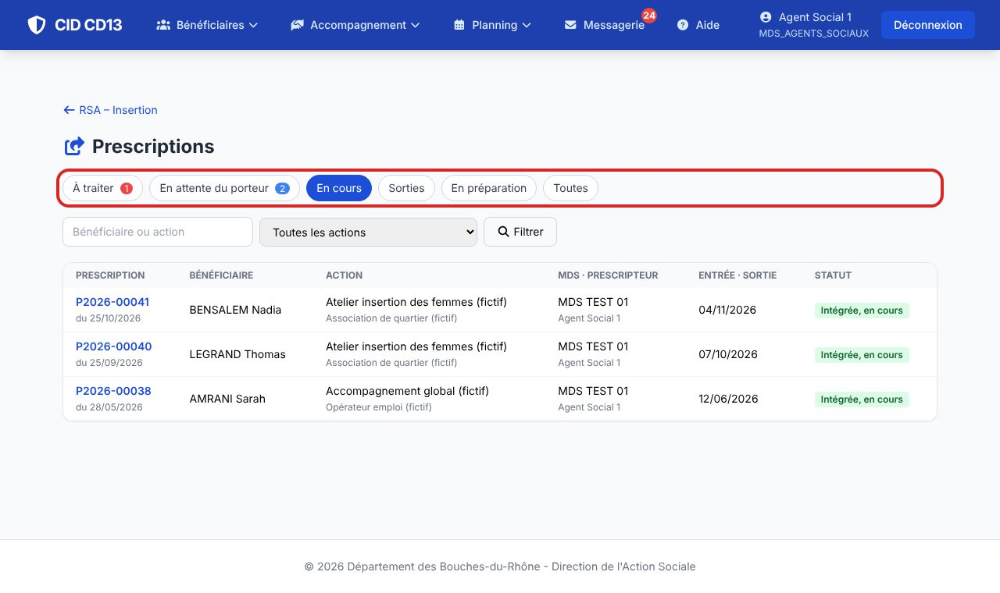
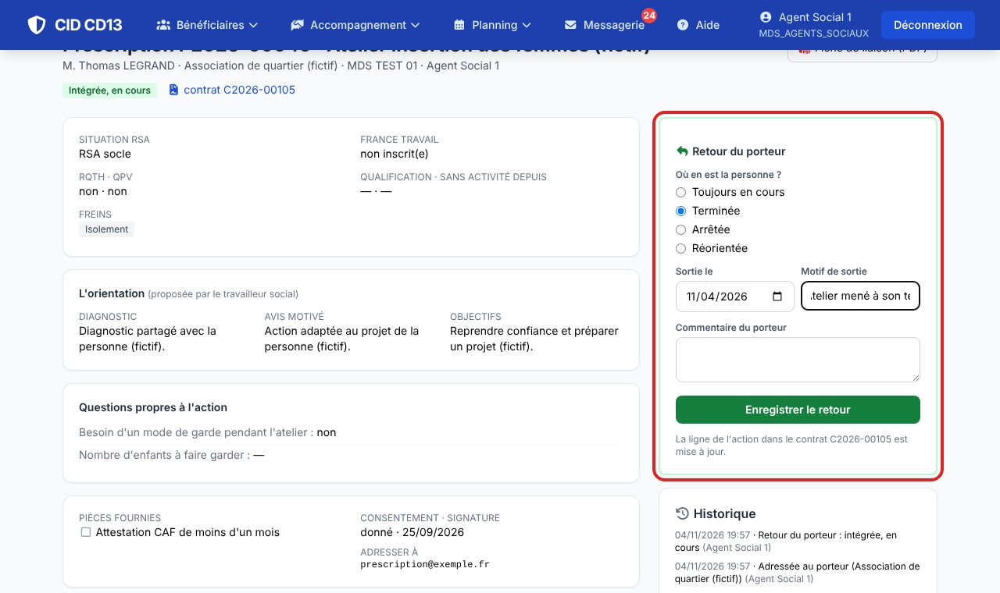
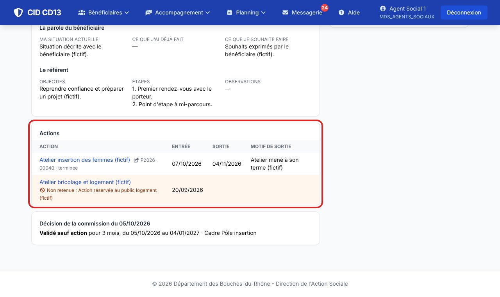

1Retrouver ses prescriptions

- En attente du porteur : adressées, pas encore intégrées. En cours : intégrées. Sorties : terminées, arrêtées, réorientées ou non intégrées.
- Une prescription refusée par le pôle apparaît dans votre onglet À traiter.
2Noter la sortie

- Sur une prescription en cours : terminée, arrêtée (motif obligatoire) ou réorientée (vers l'ASI, un autre dispositif ou France Travail), avec la date de sortie.
3Le tableau des actions du contrat

- La ligne de l'action porte le numéro et le statut de la prescription ; ses dates et son motif de sortie viennent du retour du porteur.
- Dans la rédaction du contrat, ces lignes ne se saisissent pas : elles sont tenues à jour par la prescription.
Bon à savoir
- Chaque étape est tracée dans l'historique de la prescription.
Et ensuite ?
Cliquez sur une image pour l'agrandir. Le cadre rouge montre où cliquer ou quoi remplir. Toutes les données affichées sont fictives.